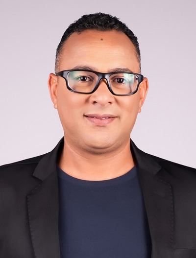

Conselho Municipal de Turismo
O Decreto nº 9.225 nomeou Anderson como representante titular da Secretaria Municipal de Turismo no conselho para o biênio 2026–2028.
Consultar o decretoUbatuba, São Paulo
Secretário municipal de Turismo de Ubatuba, com experiência em assistência social, comunicação e segurança pública.
Conheça a trajetória
Anderson Paiva dos Santos trabalhou na gestão municipal de Ubatuba e no Governo do Estado de São Paulo. Hoje, integra a administração de Ubatuba à frente da Secretaria de Turismo.
É tecnólogo em Marketing. O perfil publicado pela Prefeitura também informa que ele cursa bacharelado em Direito.
Antes de assumir a pasta de Turismo, Anderson atuou como secretário nas áreas de Assistência Social e Comunicação de Ubatuba.
No Governo do Estado de São Paulo, trabalhou na área de segurança pública, segundo a biografia divulgada pelo município.
O Decreto nº 9.225 nomeou Anderson como representante titular da Secretaria Municipal de Turismo no conselho para o biênio 2026–2028.
Consultar o decretoA Portaria nº 1.289 registra a nomeação de Anderson para a pasta municipal de Comunicação.
Consultar a portariaA Prefeitura registrou uma moção à equipe de Assistência Social, pasta então chefiada por Anderson.
Ler a notícia da PrefeituraEsta página apresenta a trajetória de Anderson Paiva para uma possível candidatura. Até 24 de novembro de 2026, a pesquisa para esta apresentação não confirmou o registro de uma nova candidatura.
Consultar candidaturas na Justiça Eleitoral